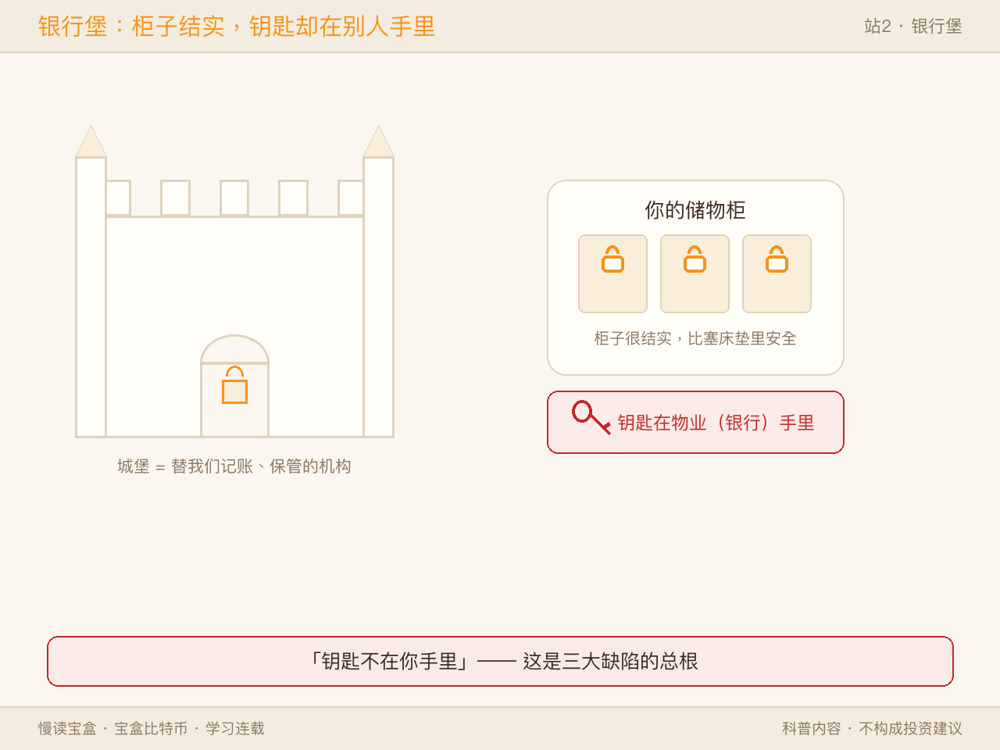
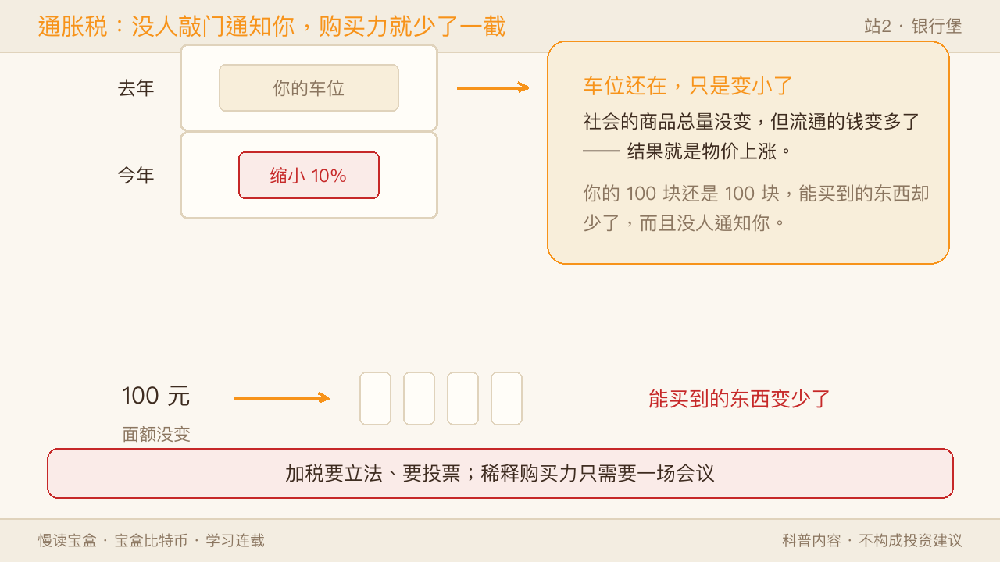
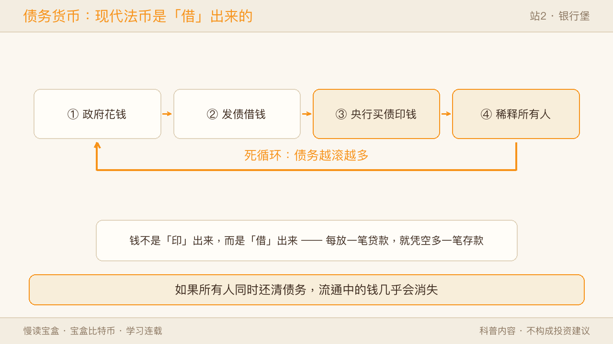
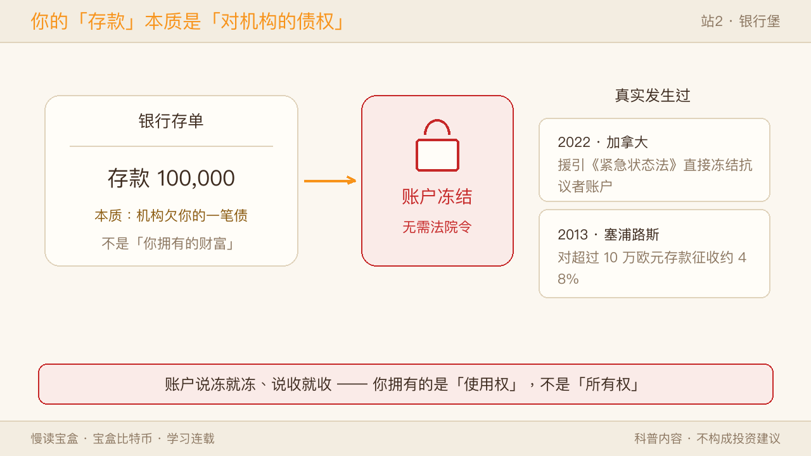
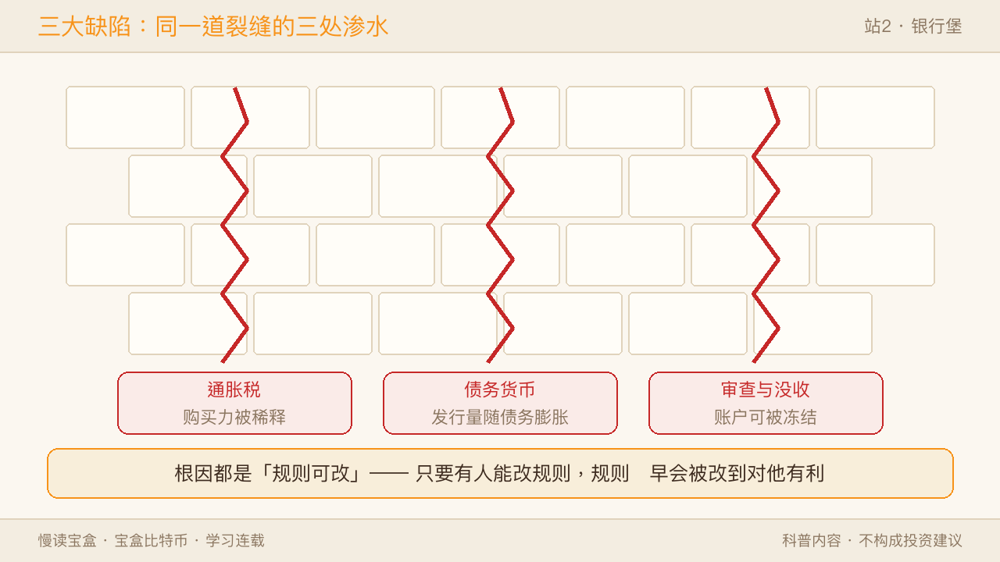
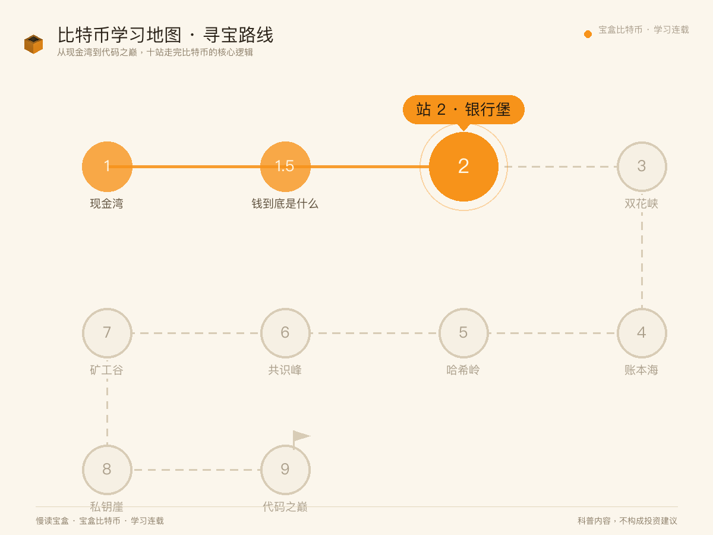
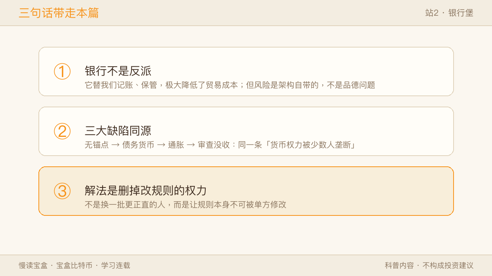

一张地图，10 个站点。站1.5「钱到底是什么」我们看清了「钱是共识」——钱不过是一群人共同的约定，而比特币把信任从机构搬到了规则。这一站银行堡，我想请你换个位置站——不是站在客户队列里排队，而是站到城堡的吊桥上，看看这座替我们管钱的堡垒，自己有哪些结构性裂缝。

一、银行堡，字面意思就是「管钱的城堡」
它高墙林立，看起来固若金汤——但你手里没有钥匙，开门关门全看城堡主人。
✅ 像的地方：银行堡像你租的带锁储物柜。柜子很结实，比塞床垫里安全多了，但钥匙攥在物业手里。 ⚠️ 不一样的地方：储物柜你至少知道物业是谁、不满意还能去理论；银行这座「城堡」，你看不见主人长什么样，也换不掉他，规则也不是你定的。
记住这个画面，下面三大缺陷，全是「钥匙不在你手里」的不同写法。
二、先说句公道话：银行堡不是反派
踩进银行堡之前，得先承认一件事：过去上千年里，银行替人类做成了两件了不起的事。
其一，是记账。在没有银行的中世纪，一笔跨城交易要靠镖局押着金子走数月；今天你在手机上转一笔钱，后台是银行在替你记「谁少了多少、谁多了多少」。记账让贸易的摩擦成本断崖式下降。
其二，是保管。把钱存进银行，比塞在床垫里安全——防火、防盗、还能生利息。
但银行替我们记账、替我们保管的同时，也把三个它自己解不开的结构性风险，悄悄带进了每个人的生活。这三大缺陷不是银行的「品德问题」，而是只要「记账权 + 保管权」集中在一小撮人手里，就必然出现的架构问题。
三、缺陷一 · 通货膨胀：一种你从没投过赞成票的税
通货膨胀的本质，是偷偷稀释你的购买力。
社会的商品总量没变，但流通的钱变多了，结果就是物价上涨。你手里的 100 块还是 100 块，能买到的东西却少了。没有人敲门通知你「您的钱贬值了 10%」——因为根本不需要通知。
📖 数字：1971 年布雷顿森林体系崩溃时，1 盎司黄金 ≈ 35 美元；50 年后（2021 年）1 盎司黄金 ≈ 1800 美元。美元对黄金贬值约 98%——50 年前 1 美元能买到的黄金，今天要 50 多倍的美金才换得回。（按消费品物价算，缩水没有这么极端，但方向一致：持续在贬。）
加税要立法、要辩论、要选票，你还会愤怒；印钱只需要一场会议，你甚至不会察觉。这就是「通胀税」——货币当局通过印钱，实打实地向你征了一笔税，而你连投票的机会都没有。
✅ 像的地方：通胀税像小区物业「偷偷把每户的停车位缩小 10%」——你的车位还在，但能停的车变小了，还没人告诉你。 ⚠️ 不一样的地方：物业改车位你会去吵架；货币稀释你连「去哪吵架」都不知道，因为规则就是制定规则的人写的。

四、缺陷二 · 债务货币：货币当局的「无限信用卡」
第二个缺陷更隐蔽：现代法币本质上是债务货币。
在部分准备金制度下，钱不是「印」出来的，而是「借」出来的——银行每放一笔贷款，就凭空创造了一笔新存款。这意味着，如果所有人同时还清债务，流通中的钱几乎会消失。
而货币当局面对债务压力时，往往有两个选择：削减开支（民怨沸腾），或让央行印钱还债（无人察觉）。历史反复证明，后者被反复选中。于是形成死循环：
政府花钱 → 没钱 → 发债 → 央行买债 → 印钱 → 稀释所有人 → 政府继续花钱 → 继续发债……
📖 数字：2020 年新冠疫情期间，美联储资产负债表从约 4 万亿膨胀到 9 万亿美元。随之而来的是 2021 年美国通胀率达 7%，是 40 年来的高位。普通人的生活成本肉眼可见地上升。
法定货币的本质，是「货币当局的无限信用卡」。当债务能被转嫁给货币本身，谁来制约它的花钱欲望？答案是：没有。

✅ 像的地方：债务货币像你用信用卡「透支」消费——花出去的钱，其实是你向银行借的，将来得连本带利还。
⚠️ 不一样的地方：信用卡透支是你一个人的债；法币的「债务」是整个系统对每个人的隐性负债——它靠「大家都信币值稳定」才转得动，一旦信心崩塌，链条瞬间卡死。
五、缺陷三 · 无锚点 → 审查与没收：你以为的所有权，其实是使用权
第三个缺陷最隐蔽，也最关键。
1971 年 8 月 15 日，尼克松宣布美元停止兑换黄金。从那天起，人类进入全球货币没有任何实物锚定的时代。法币的价值，只剩一句承诺：「我们不会滥发。」而承诺，却是随时可能被单方面撕毁的抵押品。
这带来一个很多人没意识到的真相：你存在银行里的资产，本质上是「你对机构的债权」，不是「你拥有的财富」。
一旦掌权者决定冻结账户、没收资产，你几乎没有反抗手段。
📖 海外真实事件：2022 年加拿大卡车司机抗议，政府援引《紧急状态法》直接冻结了抗议组织者和捐款者的银行账户——没有法院令，没有正当程序。你的银行账户，随时可以被冻结，只需要一个「紧急状态」。
📖 海外真实事件：2013 年塞浦路斯银行危机，当局直接「征收」超过 10 万欧元存款的约 48% 作为救助条件。钱不是被偷的，是被合法地拿走的。
「大到不能倒」不只是对银行说的，也是对储户说的。传统金融体系的「保护」，依赖的是掌权者的善意——而善意从来不是保证。

✅ 像的地方：无锚点像一张「房东随时能改的租房合同」——你住着，但条款他说了算，哪天不爽就能把你清退。
⚠️ 不一样的地方：租房合同好歹有法律和押金兜底；法币的「无锚点」连兜底都没有——掌权者真要冻结、没收，你连「合同」都拿不出，只能认。
六、同一道裂缝，换个视角看
慢读宝盒习惯把一个概念拆成多个视角。银行堡的三大缺陷，换双眼睛看，会完全不同：
- 普通人视角：我勤勤恳恳存的钱，为什么越来越不经花？为什么我的账户说冻就冻？——答案是：你的「所有权」其实是「使用权」，钥匙不在你手里。
- 开发者视角：这三件事在工程上只有一个名字——「可变的全局状态 + 一个拥有 admin 权限的管理员」。货币当局能随时调用
mint()增发，银行能调用freeze(address)冻结你。任何带后门的系统，安全性上限都等于「掌握后门那个人的操守」，而这在工程上不可审计。正确的修法不是「加强审计」，而是从架构上删掉这些接口。
七、三大缺陷的共同本质：一个架构缺陷的三种症状
如果这一站只让你记住一句话，请记住这句：
三大缺陷都是「货币权力被少数人垄断」的结果，而不是三个彼此独立的技术故障。
顺序其实是倒过来的——先有「无锚点」（货币不再兑换实物），才有「债务货币」（发行量随债务无限扩张），最后表现为「通货膨胀」（购买力被稀释），而账本始终掌握在同一批人手里，于是顺理成章地有了「审查与没收」。
三大缺陷合到一张表里看：
| 缺陷 | 你的感受 | 机制根因 | 比特币的解法（预告） |
|---|---|---|---|
| 通货膨胀 | 钱越来越不经花 | 增发稀释每一单位的购买力 | 总量 2100 万写死，谁也无法增发 |
| 债务货币 | 扩张停不下来 | 货币随债务无限派生 | 不靠借债发行，新账页由算力"挣"来 |
| 无锚点 → 审查与没收 | 账户说冻就冻 | 规则由少数人定、可单方修改 | 私钥自持 + 规则改动需全网共识 |
这个链条的每一环，都能用一句话概括：只要有人能改规则，规则迟早会被改到对他有利的方向。 这不是道德判断，而是激励结构的必然——把任何一群人放到这个位置，结局都一样。
所以真正的解决方案，不可能是「换一批更正直的人」，而只能是：让规则本身不可被单方修改。 这，正是下一站我们要讲的故事。

八、回到地图
回到我们见过的那张地图：站1.5「钱到底是什么」你认清了「钱是共识」，这一站你看见了银行堡的裂缝——银行不是反派，它替我们记账、保管，极大降低了贸易成本；但它把三个结构性风险带进了生活，而三者同源：货币的规则由人定、可改。
当你把财富存在一个「别人说了算」的系统里，你拥有的是「使用权」，不是「所有权」。

三句话带走本篇：
